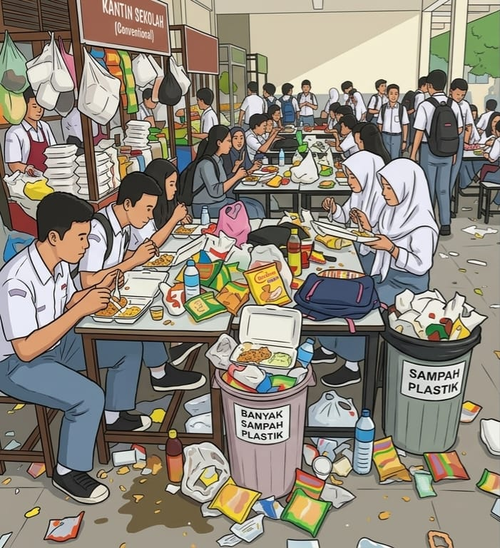

Prolog: Adhim, Marsya, lan Jovita lagi ngumpul ing kantin sekolah kanggo ngrembug babagan sampah plastik sing numpuk banget.
Adhim: "Kanca-kanca, delengen sampah plastik ing kantin iki, kok saya suwe saya akeh banget ya?"
Jovita: "Bungkus jajan lan sedotan kabeh ngebaki panggonan sampah nganti tumpah-tumpah."
Marsya: "Apa sampeyan ora ngrasa risih yen saben dina kudu ndeleng pemandangan sampah kaya ngene?"
Marsya: "Iya leres, aku maos berita yen pembakaran sampah plastik kuwi salah siji sumber emisi karbon sing mbebayani."
Marsya: "Jebule, emisi karbon kuwi sing dadi pemicu utama anane owah-owahan iklim global saiki."
Jovita: "Wah, jebule dampak sampah plastik kuwi gedhe banget ya kanggo owah-owahan iklim global saiki."
Marsya: "Aku kuwatir banget yen sampah iki ora enggal diolah, lingkungan sekolah dadi ora sehat."
Adhim: "Aku duwe ide, kepiye yen awake dhewe miwiti gerakan ngurangi sampah plastik ing kantin?"
Adhim: "Gerakan iki bakal fokus supaya kanca-kanca gelem beto wadhah mangan dhewe saka omah."
Adhim: "Dadi, yen kita bisa ngurangi panggunaan plastik, kita wis melu nyuda emisi karbon."
Jovita: "Saliyane nyuda emisi, lingkungan sekolah kita dadi luwih resik lan katon asri banget yen bebas plastik."
Marsya: "Pancen rada angel ing wiwitan, nanging yen dilakoni bebarengan mesti bakal dadi pakulinan apik."
Adhim: "Apa sampeyan kabeh setuju yen awake dhewe kampanye ngenani babagan ini?"
Marsya: "Aku yakin kanca-kanca bakal gelem melu yen kita miwiti menehi tuladha saka awake dhewe dhisik."
Jovita: "Awake dhewe kudu menehi pangerten marang kanca-kanca supaya ora nggampangke buang sampah."
Adhim: "Aku bakal nyoba nggawe poster ajakan supaya kanca-kanca luwih tlaten nggawa botol ngombe dhewe."
Marsya: "Saliyane iku, kita bisa njaluk tulung pengurus kantin supaya ora nyediyakake sedotan plastik maneh."
Jovita: "Aku bisa dadi koordinator supaya gerakan iki bisa ditampa dening kanca-kanca ing kelas liyane."
Jovita: "Ayo sesuk awake dhewe sowan marang Ibu Kantin lan ngaturake rancangan gerakan iki kanthi sopan!"
Jovita: "Muga-muga kabeh warga sekolah gelem ndhukung aksi nyata kita kanggo nglestarikake alam iki."
Jovita: "Ayo awake dhewe semangat nindakake perkara apik iki bebarengan demi lingkungan sekolah sing luwih apik!"
Epilog: Adhim, Marsya, lan Jovita banjur sepakat kanggo miwiti gerakan "Kantin Ramah Lingkungan" supaya bisa nyuda emisi karbon ing sekolah.